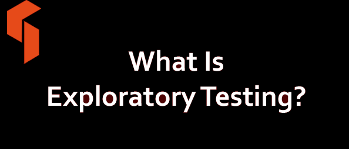
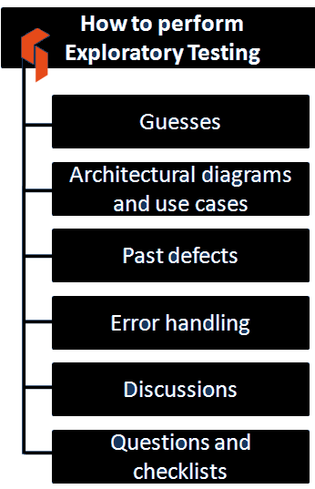
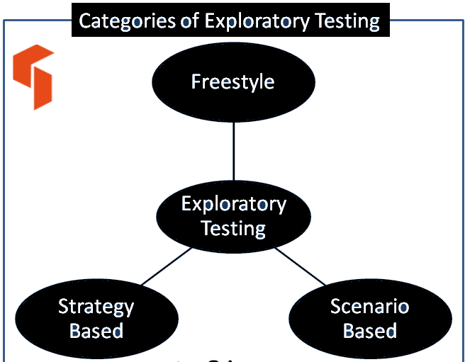

![Genislab]() Genislab Technologies
Genislab TechnologiesAs its name implies, exploratory testing is about exploring, finding out about the software, what it does, what it doesn’t do, what works and what doesn’t work. The tester is constantly making decisions about what to test next and where to spend the (limited) time. This is an approach that is most useful when there are no or poor specifications and when time is severely limited.
Exploratory testing can be used in conjunction with other techniques.
Table Of Contents
- What is Exploratory Testing?
- When to use Exploratory Testing?
- Testing approach: How to do exploratory testing?
- Advantages of Exploratory Testing
- Disadvantages of Exploratory Testing
- Example of Exploratory Testing
- Categories of Exploratory Testing
- Exploratory Testing in Agile
- Difference Between: Exploratory vs automated/scripted testing
- Real time example of Exploratory Testing
- Exploratory Testing Interview Questions
- Summary of Exploratory Testing
What is Exploratory Testing?
- Exploratory testing is a hands-on approach in which testers are involved in minimum planning and maximum test execution.
- The test planning involves the creation of a test charter, a short declaration of the scope of a short (1 to 2 hour) time-boxed test effort, the objectives and possible approaches to be used.
- The test design and test execution activities are performed in parallel typically without formally documenting the test conditions, test cases or test scripts. This does not mean that other, more formal testing techniques will not be used. For example, the tester may decide to us boundary value analysis but will think through and test the most important boundary values without necessarily writing them down. Some notes will be written during the exploratory-testing session, so that a report can be produced afterwards.
- Test logging is undertaken as test execution is performed, documenting the key aspects of what is tested, any defects found and any thoughts about possible further testing.
- It can also serve to complement other, more formal testing, helping to establish greater confidence in the software. In this way, exploratory testing can be used as a check on the formal test process by helping to ensure that the most serious defects have been found.
- Exploratory testing is described in [Kaner, 2002] and [Copeland, 2003] Other ways of testing in an exploratory way (‘attacks’) are described in [Whittaker, 2002].
When to use Exploratory Testing?
- In the early stages of SDLC – software development life cycle when the code undergoes rapid changes, exploratory testing can be highly effective.
- The developers can use this technique to perform unit tests while the testers can acquire familiarity with the application using this testing approach.
- The experience gained from exploratory testing can be valuable in preparing test scripts and doing additional testing in the later stages of the software development life cycle.
- In the agile development environment, there are short scrum cycles and little time available for developing formal test design and scripts. Exploratory testing is well suited for agile environment as it keeps up with the short scrum cycles.
- While performing exploratory testing, test plans are developed on the fly which saves lot of time for the tester. At the end of each scrum cycle, critical exploratory tests can be captured for subsequent scrums.
Testing approach: How to do exploratory testing?
- Utilize the tester’s ability to learn something by themselves to perform testing
- Test case preparation and execution are performed simultaneously
- Based on the observations of the tester, the test cases keeps growing
- The tester incorporates their learning into the test
- Testing techniques such as Equivalence partitioning, Error Guessing, Decision Table Testing, Boundary Value Analysis and others could also be combined with exploratory testing
- Testers can apply their ideas and never get lost from their mission
- Exploratory testing doesn’t use test automation, instead it focus on tester’s knowledge, observation and experience
- In order to maintain focus, exploratory testing can be session based which provides a structure
Advantages of Exploratory Testing
- Less preparation is needed and important bugs are found quickly
- Thinking on your feet, reacting quickly is encouraged and more defects are uncovered
- Lot of focus is given to expanding your knowledge and learning, for the tester
- It can be used to review the work done by another tester
- Exploratory testing can catch defects that may have been missed in the test cases
- In case of limited time, exploratory testing can be used to test new features while regression testing can be used for existing features
Disadvantages of Exploratory Testing
- As the tests are invented and performed randomly, they can’t be reviewed in advance and it can be difficult to show which tests have to be run.
- Testing is dependent on tester’s knowledge, skill and experience.
- Gaining familiarity with an application takes time, so there is a possibility of defects being missed if the tester has less knowledge of the website or application
Example of Exploratory Testing
Let’s suppose someone is driving a car to a place in a new area without a map. The person driving the car will use various common techniques to reach the place, such as:
- Getting the map of the area
- Travelling in some random direction to figure out the place
- Calling up and asking a friend for the route
- Asking for directions by going to a nearby gas station
The same idea can be extended to exploratory testing.
Let us assume you have been asked to perform exploratory testing on a Hospital management system.
As shown in the figure below, there are several ways to perform exploratory testing.
Guesses
Guesses are used to find part of the program that is likely to have more errors. Previous experience of working on a similar product / software / technology helps in guessing.
In case of the Hospital management system, you could guess that the payment module can have higher errors since it has to integrate with the payment gateway, transactions could time out and lead to errors if not handled correctly.
Architectural diagrams and use cases
Architectural diagrams describe the interactions and relationships between different components and modules. Use cases give an understanding of the product’s usage from the end user’s perspective.
Exploration technique may use these diagrams and use cases to test the product.
Hospital Administration System – You remember that there was a use case where more than one person could share the same phone number and the application should accept it, you decide to test that scenario.
You also recall from the architecture diagram that the reporting function is deployed independently from the main application and they take a few minutes to generate and get emailed to the user, so you decide to test it as well to ensure that reports are being generated and the email functionality is configured corretly.
Past defects
Studying the defects reported in the previous releases helps in understanding those features of the software that are expected to have maximum defects.
In the past, reporting module of the hospital management system used to consume a lot of memory and have several errors so you decide to test it as well.
Error handling
Error handling is that part of the code which takes appropriate actions in case of any failure. Exploratory testing could be done using different scenarios to test graceful error handling.
In the Hospital Management System, the reporting module would consume a lot of memory and crash sometimes. You decide to test it to ensure that reports that have been queued for generation are generated eventually even if there are any issues encountered in between.
Discussions
Exploratory testing could also be planned based on the understanding of the software during project discussions and meetings.
Questions and checklists
Questions like “what, when, how, who and why” can provide clues for exploratory testing of the software.
Categories of Exploratory Testing
1. Freestyle exploratory testing
In freestyle exploratory testing, application is tested in adhoc way and not many guidelines or procedures are set for testing. But exploratory testing can be useful in the following situations:
- The tester needs to get familiarized with the application rapidly
- The tester has to validate other tester’s work
- A defect is required to be examined by the tester
- The tester wants to perform smoke test quickly
2. Scenario based exploratory testing
In Scenario based exploratory testing, testing is performed on the basis of scenarios. Scenarios could be provided by the customer or could be prepared by the test team. After preliminary testing has been performed, testers may innovate testing based on gained knowledge and skill.
3. Strategy based exploratory testing
In strategy based exploratory testing, common testing techniques like Decision Table based testing, Cause-Effect graphing and Error Guessing are joined with the exploratory testing. The suitable tester for this type of testing would be someone who has good knowledge about the application.
Exploratory Testing in Agile
In Agile methodology there are short sprints usually of about one month and the deadlines are extremely tight. Exploratory testing is very useful in agile because of tight deadlines and focus on speedy results. Once the requirements are understood by the tester, he can perform testing on the basis of his/her skill and intuition.
When the tester becomes more familiar with the application’s features and behaviour, he can create additional test cases for further testing and could find more bugs.
As exploratory testing in agile is free of rigid processes and documentation requirements, the tester does not have to maintain documents for everything but it would be good if a short report on items tested, bugs found etc. is maintained for the purpose of future reference.
Advantages of exploratory testing in agile
- It is possible to provide quick feedback about the project to development team
- A wide range of defects could be detected
- Exploratory testing could be performed by developers, testers as well as by designers and business analysts as each person may have a different point of view and there aren’t any specific test cases
- In case the current requirement is not stable then exploratory testing could be helpful in testing requirement that are new, in the restricted time limit
Difference Between: Exploratory vs automated/scripted testing
| Exploratory testing | Automated/scripted testing |
| 1) There is no specific need to maintain documentation in case of exploratory testing. | 1) A good level of documentation is required while performing automated testing. |
| 2) In this approach, little or no lead-in time is required before test execution. | 2) A significant lead-in time is required before test execution in this approach. |
| 3) There is no investment of preparing documentation and no overhead related to reading it. | 3) There is significant investment in preparing test scripts and creating documentation prior to test execution. |
| 4) There is no clear or measurable test coverage in exploratory testing. | 4) Test scripts can be traced back to original requirements and specifications to demonstrate test coverage. |
| 5) The application is compared to the knowledge and understanding of the tester on how the application is supposed to work. | 5) The application is verified against specifications. |
| 6) In this approach, testing cannot be reproduced, only defects can be reproduced. | 6) Testing can be easily reproduced. |
Real time example of Exploratory Testing
In real time while working on a live project, a tester may be required to use exploratory testing to randomly test features of the application with the intention to find bugs. Exploratory testing technique could be used to test application from any domain like Telecom, Healthcare, Financial etc. i.e. exploratory testing technique is not domain specific.
Generally it is most useful to use exploratory testing when the tester wants to test those features of the application for which no bugs were fixed in a specific code released by the development team. In other words, exploratory testing is most useful to do sanity testing in real time scenario.
Exploratory Testing Interview Questions
- What is exploratory testing and when should it be performed?
- How do you perform exploratory testing?
- What are the main advantages and disadvantages of exploratory testing?
- What are the different types of exploratory testing?
- What are the main differences between exploratory and automated/scripted testing?
- Explain exploratory testing by giving an example.
Summary of Exploratory Testing
Exploratory testing is not a conventional way of testing but still it is a very powerful way to test an application.
It pushes good testers to think out of the box and come up with real time test cases for finding defects. Being freestyle, exploratory testing could be performed on any project that requires minimal documentation no matter whether it is using agile methodology or waterfall model or any other software development life cycle model.
Have you used exploratory testing in your projects? Please share your experience in the comments below.
Other popular articles:
- What is the ISTQB Agile Tester Extension Certification?
- What is Adhoc testing? Types, Advantages and Disadvantages
- What is Acceptance Test-Driven Development in Agile Methodology?
- What is Exploratory Testing in Agile Methodology?
- How to manage testing team at different levels of independence?
Archana says
please give simple and short example of exploratory testing
Mary says
The is a mistake in the phrase “For example, the tester may decide to us boundary value analysis…” To use – will be correct.
CB Mora says
In my experience, ad-hoc testing or exploratory has always been a great way to get new testers used to the application or system and it is true, we usually do this testing as well during the final phase of testing prior to release. It is a way to combine personal and professional experience while providing ease of mind in the way of quick sanity checks or even smoke checks.
Pranit Pingale says
Do exploratory testing is scripted?
Akshita Rautela says
No, it is kind of non-scripted testing. since it takes minimal planning with simultaneous execution as well as designing.
Saathvika says
When do we generally do exploratory testing and in SDLC where does it fit in ??
Shreya says
Generally, developers can apply this testing technique while unit testing their code. Testers ans developers can use this technique while testing components.
Using this technique ‘early’ in any s/w development life cycle model is highly effective… hence unit, component and component integration testing.
Ella Bukchin says
Agile methodology created many of new terminologies, but simply saying, the Explaratory in a standard testing methodology called Ad Hoc testing based on common human sense, and it is done by QA Test engineer (black box) when no documentation presented, but test analyzes results only.
Anastasiya says
For example, the tester may decide to usE boundary value analysis but will think through and test the most important boundary values without necessarily writing them down.